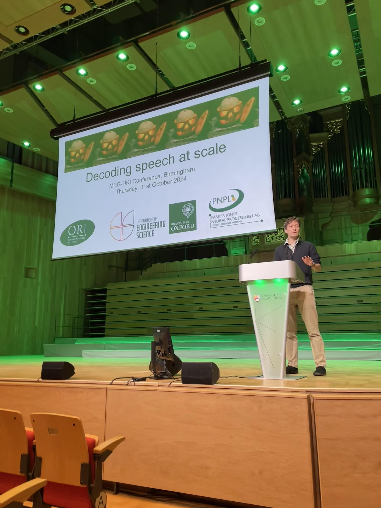

Research

My research spans machine learning, neuroscience, robotics, and language technology. Current work in PNPL centres on understanding and decoding brain activity, from the datasets and benchmarks needed to make progress, through deep-learning methods, to the neurobiological foundations of speech and language.
Non-invasive brain-computer interfaces
Non-invasive neural decoding for communication, with a particular focus on speech, inner speech, and clinically relevant brain-computer interfaces.
Large-scale datasets, benchmarks, and evaluation
Building the large-scale datasets, shared benchmarks, competitions, and evaluation methods needed to make progress in decoding and modelling brain data.
Deep learning for brain data
Developing representations, architectures, and learning strategies for neural data, including cross-subject generalisation, data augmentation, synthetic data, data-efficient learning, and foundation models.
Speech and language neuroscience
Studying how the brain represents and transforms speech and language, both as a fundamental scientific problem and as a foundation for better neural decoding.
Clinical neuroscience
Using neuroimaging and machine learning to study language and cognition in neurological populations, with a focus on patient-specific mapping, prediction, and clinically useful methods.
Brain2Robots
Exploring how principles of neural computation and motor control can inform learning and control in robots.
Generative models for vision
Generative and object-centric models for learning structured representations of visual scenes.
Generative models for robotics
Generative models and structured latent representations for robot perception, planning, reaching, and locomotion.
Speech and language technology for Indigenous languages
Low-resource speech recognition and NLP, particularly for Hawaiian and other Indigenous languages, with an emphasis on community-led approaches to data and evaluation.